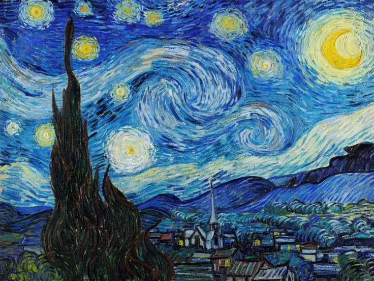
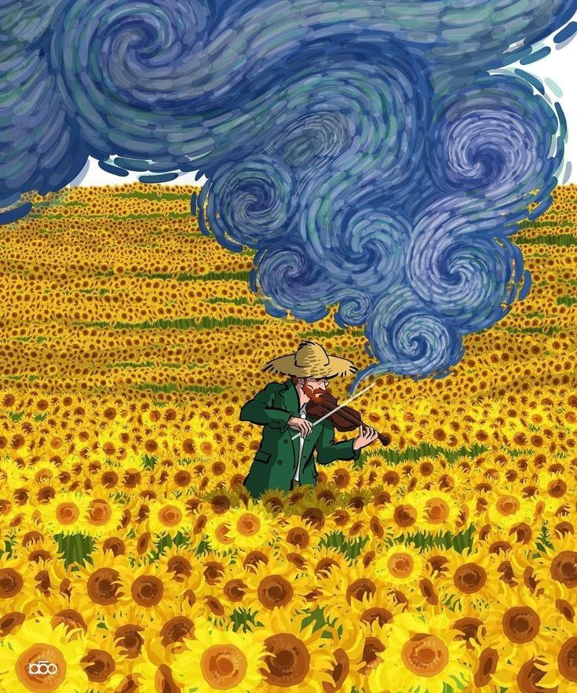
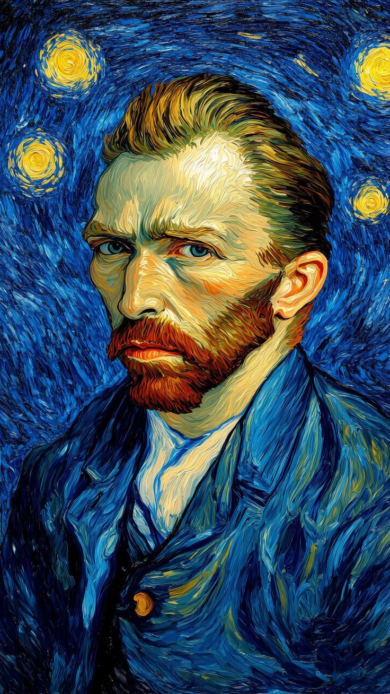

Kẻ Đuổi Theo Mặt Trời & Những Vì Sao
Vincent Willem van Gogh (30/3/1853 – 29/7/1890) là một họa sĩ Hậu Ấn tượng người Hà Lan, được đánh giá là một trong những nhân vật nổi tiếng và có ảnh hưởng nhất trong lịch sử nghệ thuật phương Tây.
Trong hơn một thập kỷ, ông đã sáng tạo ra khoảng 2.100 tác phẩm nghệ thuật, trong đó có khoảng 860 bức tranh sơn dầu, hầu hết đều được vẽ trong hai năm cuối đời. Tác phẩm của ông bao gồm phong cảnh, tĩnh vật, chân dung và tự họa, đặc trưng bởi màu sắc đậm và nét cọ bốc đồng, biểu cảm.
Mặc dù sinh thời ông không gặp nhiều may mắn và phải vật lộn với các vấn đề tâm lý, nhưng những di sản ông để lại cho thế giới là vô giá.

Một trong những tác phẩm nổi tiếng nhất thế giới, khắc họa bầu trời đêm cuộn xoáy qua góc nhìn từ phòng bệnh viện tâm thần của ông.

Biểu tượng của sự sống và tình bạn. Van Gogh dùng màu vàng để thể hiện niềm hy vọng và ánh sáng rực rỡ.

Van Gogh vẽ rất nhiều chân dung tự họa vì ông không có tiền để thuê người mẫu.
Các tác phẩm của Vincent van Gogh vẫn tiếp tục truyền cảm hứng cho nghệ thuật, phim ảnh và công nghệ trong thời hiện đại. Video dưới đây là một ví dụ về cách nghệ thuật của ông được tái hiện ngày nay.